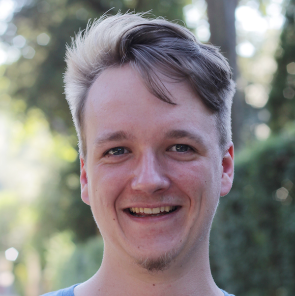

 I’m a physics student at HU Berlin where I am currently writing my master thesis at the Lindner lab.
egerlanc@physik.hu-berlin.de
github.com/chegerland
Polaritonic Contribution to the Casimir Energy between two Graphene Layers
with Kurt Busch and Francesco Intravaia, Physical Review B 100, 235418, 2019 [doi] [arXiv] [pdf]
Plasmonischer Beitrag zur Casimir-Kraft zwischen zwei Lagen Graphen
Bachelor thesis, HU Berlin, 2017 [pdf]
(upcoming) Nonlinear response of noisy neurons with spike-triggered adaptation
@ DPG-Frühjahrstagung SKM 2020, Dresden 2020
The Impact of Geometry on Quantum Friction
@ DPG-Frühjahrstagung SAMOP 2019, Rostock 2019 [html]
Contribution of polaritonic modes to the zero-temperature Casimir interaction between two graphene sheets
@ 671. WE-Heraeus-Seminar, Bad Honnef 2018 [pdf]
Polaritonic Contribution to the Casimir Interaction in Graphene Systems
@ DPG-Frühjahrstagung SAMOP 2018, Erlangen 2018
This site is heavily inspired by Fredrik Johansson.